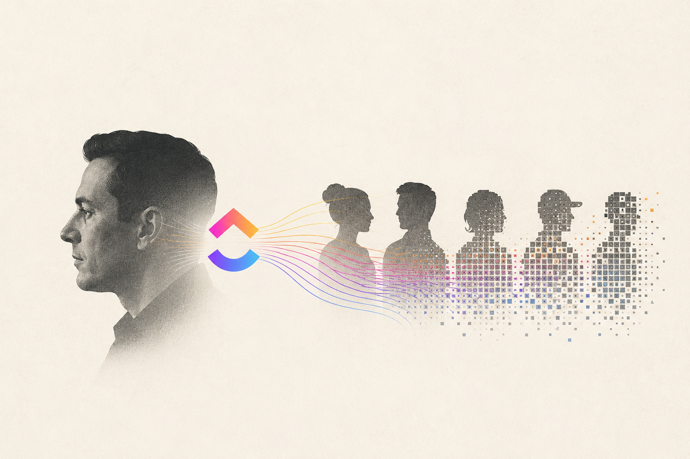

ClickUp CEO Outlines the AI-Era Workforce

Image Source: ChatGPT
ClickUp CEO Zeb Evans offered a possible vision of what the future workforce might look like in the AI era, describing a future in which the most valuable employees are those who can design, manage, and direct AI-powered systems.
Describing his company’s new model, referred to as a “100x organization,” Evans explained that ClickUp would be built around three categories of employees. Builders, including engineers and product managers, who will focus on orchestrating AI agents, applying judgment, and evaluating outcomes. System managers, who will automate workflows and then take ownership of the AI systems they create, and Front-liners, who will focus on human relationships, particularly with customers, while AI handles supporting processes.
Evans also argued that AI will reshape traditional professional boundaries. As AI reduces the time needed for research, analysis, and execution, roles such as product management and design may increasingly converge around higher-level skills such as creativity, customer understanding, and decision-making.
The announcement came alongside a 22% workforce reduction, which Evans framed as part of a broader shift toward an AI-first organization rather than simply a cost-cutting effort. The company also introduced compensation bands reaching $1 million in annual cash compensation for employees who deliver what Evans described as “100x impact” by building or managing AI systems.
Source (The Next Web) →